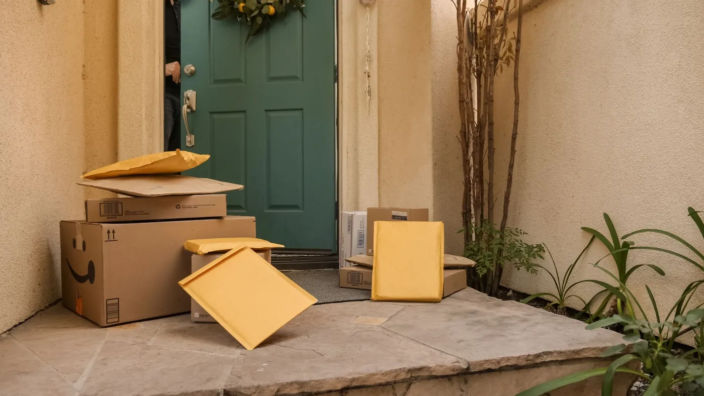

Cisco is replacing the Webex assistants you prompt with agents that act on their own. The useful question for your business is which events should start work, and how much the agent may do before a person looks.
Cisco has rolled out a broad set of agentic AI features across Webex, its workplace products and its customer experience line. The change that matters most sits in Webex itself. Cisco says it is replacing prompt-driven assistants with what it calls AI teammates: agents that join meetings and spaces and carry out tasks across Webex and third-party apps, coordinated with other approved agents.
On the customer side it launched Dialog, which keeps context about each customer over time (we covered that part in an earlier note on agent memory). The agents run inside Cisco's AI Defense guardrails, with Splunk supplying the telemetry.
Take away the product names and one shift is left. The old assistant waited for someone to type. The new one starts when something happens.
A prompted assistant helps the people who remember to use it, at the moments they think to. That is rarely where the money leaks. Think of the refund request that sat over a long weekend in a shared inbox, or the large account that opened three tickets about the same outage that nobody connected, or the renewal that went quiet two months before the date. Nobody asks an assistant about any of these, because nobody noticed them in time.

So most of the value in a proactive agent sits in its trigger list. Each trigger is a business decision that says this event matters enough for work to start before a human notices. Choose badly and you get an agent that pings people about noise all day, which teams learn to ignore within a week.
Proactive also means nobody is watching at the moment the agent acts. An agent that drafts a reply nobody requested is harmless. One that sends it, issues a credit or closes the ticket by itself carries a different kind of risk, and you have to draw that line for each action before anything goes live.
A CX-Builder agent flow does not have to start with a chat box. It can start from a webhook, so your helpdesk, CRM or billing system calls it the moment a ticket is reopened, a payment fails or a large customer goes quiet. It can also start on a schedule, which suits the sweep jobs: every morning, find the tickets older than 48 hours with no reply and propose a next step for each.
From there the flow does what a prompted assistant would. It pulls the customer's history, checks your knowledge base and drafts the message or the summary. What changes is where it stops. A human-in-the-loop step holds anything that reaches a customer or moves money until a person approves it. Everything else lands in the owner's queue as a suggestion they can take or ignore.
Start an agent flow with the Webhook Trigger and point the helpdesk's "ticket reopened" event at it. Add a retriever over past tickets and help articles held in a vector store, an agent node that drafts the follow-up, a condition that routes by account tier, and a human input node in front of any step that sends a message or applies a credit. A second flow on a schedule runs the morning sweep and hands its list to the team lead.
Give each trigger its own small flow. That way you can switch one off by itself when it turns out to be noise.
Write down the events where you lose money today because nobody noticed in time, and pick the most expensive one. Build one triggered flow for it that drafts only, with a person approving every send. Run it for a month, count what it caught that your team missed, and only then decide which actions it may take alone.